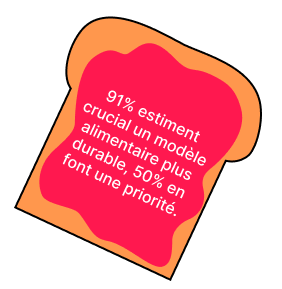

L'alimentation Durable
by Ademe
Bienvenue au restaurant "ÉcoGastronomie", où chaque plat raconte une étape du voyage vers une alimentation plus durable. Préparez-vous à un festin éducatif, un parcours chronologique à travers les chiffres de la durabilité alimentaire.
Entrée
-
Plateau Carnivore Responsable :Plongez dans un assortiment de viandes sélectionnées avec soin.
Plat
-
Pizza Terre et Tradition : Une création délicieuse où chaque ingrédient est choisi pour son impact carbone réduit.
-
Salade OGM-Free : Petites bouchées végétariennes sans OGM.
Dessert
-
Gâteau Anti-Gaspillage : Un gâteau réalisé à partir d'ingrédients récupérés pour lutter contre le gaspillage alimentaire.
-
Équitable Épices Tarte : Une tarte aux fruits agrémentée d'épices équitables.
La production de viande à un réel impact sur nos émissions de gaz à effet de serre en France. Faites un pas vers la durabilité en intégrant plus de repas végétariens dans votre routine.
Cultivez sainement avec des choix judicieux de graines, de sol et d'adaptation au climat.
Évitez les OGM, le tassement du sol et les pratiques non durables, tout en gérant les produits chimiques pour préserver l'eau, vous mangez donc plus sainement, et vous êtes plus autonomme dans votre alimentation !
-
Optez pour le local et le saisonnier !
Les produits importés représentent 19% des émissions liées à l'alimentation en France. Optez pour le local pour réduire cet impact.
-
10 Mt, c’est le poids annuel du gaspillage alimentaire estimé chaque année en France, Un gaspillage qui va du champ... à l’assiette !
-
En France, chacun contribue significativement au gaspillage alimentaire avec plus de 30kg de déchets alimentaires chaque année.
-
- 
En résumé, les Français favorisent une alimentation responsable avec des produits locaux, bio et équitables, selon le "Baromètre de la transition alimentaire 2019", indiquant un changement positif vers des choix plus durables.